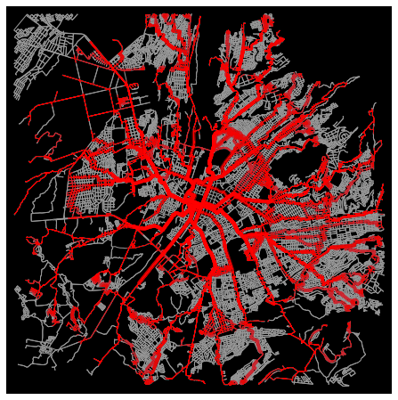

En el presente artículo presentamos la información recopilada, metodología de procesamiento y resultados finales del proyecto de Visualización de la data de tráfico presentada en Arequipa, con información extraída desde la API Distance Matrix de Google
12 de Julio de 2021
Recolección de datos
En un notebook en Google Colab utilizamos la librería OSMNX para generar los puntos que formarán parte del grafo de estudio dentro de la ciudad de Arequipa
import osmnx as ox
%matplotlib inline
G = ox.graph_from_address('Arequipa', network_type ='drive', simplify =True,dist =7000)
Gg = ox.utils_graph.get_largest_component(G, strongly =True)
ox.plot_graph(Gg)
Donde definimos el grafo desde la ubicación del centro de Arequipa, con una red de tráfico vehicular (network_type ='drive'), con conexiones simplificadas y 7 kilómetros a la redonda. El grafo generado es conexo ()get_largest_component) y se visualiza de la siguiente forma:

Este grafo cubre prácticamente toda la ciudad desde Ciudad Municipal en Cerro Colorado hasta Characato, y desde Congata en Uchumayo hasta las faldas del Misti. No se utilizarán todos los nodos presentes en este grafo sino sólo los que cubran las rutas principales. Estas rutas se determinan desde las coordenadas del centro del grafo, las cuales se obtienen con los bordes del objeto de OSMNX:
nodes = ox.graph_to_gdfs(Gg, edges =False)
limites = nodes['geometry'].total_bounds
centerx = (limites[0]+limites[2])/2
centery = (limites[1]+limites[3])/2
print( str(centerx) + "," + str(centery) )
Se decidió generar 50 rutas con 3 radios concéntricos determinados también desde los límites del grafo. Por cada radio se generan 50 pares de nodos extremos determinados por un aumento de ángulo constante de 3.6 grados. Para evitar que los nodos se superpongan entre zonas concéntricas, para cada radio se genera un descentramiento de +1.5 grados con respecto al círculo más externo. Con estos datos se generan nuevas coordenadas que son enviadas al grafo para obtener los nodos más cercanos a cada coordenada ya dada. Se obtiene una lista de 50 pares nodos extremos que producirán las rutas dentro de la ciudad. El codigo de la parte inferior muestra la configuración para el círculo más interno:
radioy = abs(limites[1]-limites[3])/2
radio = max(radiox,radioy)-0.04
x = []
y = []
for i in range(100):
dxx = math.cos(i*3.6*math.pi/180+3*math.pi/180)*radio
dyy = math.sin(i*3.6*math.pi/180+3*math.pi/180)*radio
x.append(centerx+dxx)
y.append(centery+dyy)
id = ox.distance.nearest_nodes(Gg,x,y)
Una vez conseguidos los extremos de cada camino, generamos las rutas con la función shortest_path de OSMNX, que nos da la ruta topológicamente más corta entre esos extremos. El hecho de que asiempre se obtenga la ruta más corta produce solaàmiento entre los caminos, pero a su vez aseguraque se escojan los caminos más recorridos dentro del mapa. A continuación mostramos el código y el grafo resultante para el círculo más interno:
total_colores = []
for i in range(50):
path = ox.distance.shortest_path(Gg,id[i],id[i+50])
total_nodes.append(path)
total_colores.append('r')
fig, ax = ox.plot_graph_routes(Gg, total_nodes, route_colors =total_colores, route_linewidth =6, node_size =0, bgcolor ='k')
Combinando los tres círculos, el total de rutas queda así:
Que, aproximadamente, cubre el 50% del grafo total.
Antes de proceder con la API de tráfico, convertimos cada lista de rutas en un conjunto de tuplas, para de ese modo evitar un exceso de duplicidad en los caminos y aligerar la carga de consultas en la API. Para el círculo más interno se producen 1040 tuplas entre todas las rutas.
for ruta in total_nodes:
for i in range(len(ruta)-1):
par = (ruta[i],ruta[i+1])
pares.add(par)
pareslist = list(pares)
print(pareslist)
print(len(pareslist))
1040
Extracción de información de tráfico y construcción del dataset definitivo
La API DistanceMatrix, parte de los servicios web de Google Maps, es un servicio RESTful que permite obtener información de distancias y tiempos entre un grupo de coordenadas de origen y otro de coordenadas de destino. Las configuraciones disponibles para obtener la información incluyen tiempo sin y con tráfico, tipo de viaje (auto, metro, a pie), tipo de cálculo de tráfico (optimista, normal o pesimista) entre otras. En su versión gratuita permite 25 resultados (producto cartesiano origenes x destinos) por petición y 100 peticiones por segundo. Además otorga un crédito inicial de $300 más $200 mensuales para su uso. El proyecto y sus resultados fueron diseñados tomando en cuenta estas limitaciones.
Las librerías requeridas para hacer las consultas y procesar sus resultados son requests, json, pandas para el dataframe de salida, datetime para el procesamiento de fechas y threading y queue para el trabajo en paralelo:
import json
import pandas as pd
import datetime as dt
import threading
import queue
La función para acceder a la API recibe el par de nodos de origen y destino, la lista donde se insertan los resultados, el día y hora (como marca de tiempo) en la cual se consultará el tráfico y la cola de procesamiento paralela. Ya que no todos los nodos de Arequipa generan información de tráfico o registran variaciones dependiendo del momento, por lo que dependiendo de la respuesta, se procesa la salida. Aquí duración es el tiempo de rocorrido sin tráfico, y duracion_in_traffic considerando la predicción de tráfico.
apikey = "************************"
units = "metric"
url1 = "https://maps.googleapis.com/maps/api/distancematrix/json?units ="
url2 = "&origins ="
url3 = "&destinations ="
url4 = "&departure_time ="
time = str(tiempo)
url5 = "&traffic_model ="
mode = "best_guess"
url6 = "&key ="
url_full = url1+units+url2+origins+url3+destinations+url4+time+url5+mode+url6+apikey
output = requests.get(url_full).json()
if output['rows'] and output['rows'][0]['elements'][0]['status'] = ='ZERO_RESULTS':
row.append(0)
row.append(0)
row.append(0)
elif 'duration_in_traffic' not in output['rows'][0]['elements'][0].keys():
row.append(output['rows'][0]['elements'][0]['distance']['value'])
row.append(output['rows'][0]['elements'][0]['duration']['value'])
row.append(output['rows'][0]['elements'][0]['duration']['value'])
else:
row.append(output['rows'][0]['elements'][0]['distance']['value'])
row.append(output['rows'][0]['elements'][0]['duration_in_traffic']['value'])
row.append(output['rows'][0]['elements'][0]['duration']['value'])
que.put(row)
Antes de realizar el proceso de consulta, definimos en hard code el periodo en que veremos el tráfico generado, usualmente la información que da DistanceMatrix se genera a futuro (predicción), por lo que fue necesario definir en la función previa la propiedad departure_time. Esta predicción tiene un alcance de una semana. Para el ejemplo mostrado, pedimos generar la data para el periodo del 21 al 27 de junio de 2021, en tres horas definidas: 7 de la mañana, 1 de la tarde y 7 de la noche.
fechas = []
marcas = []
for dia in range(21,28):
for hora in [7,13,19]:
fechas.append(dt.datetime(2021,6,dia,hora,0,0))
marcas.append("202106"+("0" if dia < 10 else "")+str(dia)+str(hora)+"0000")
tiempos = []
for fin in fechas:
tiempos.append(int((fin-inicio).total_seconds()))
Con las marcas de tiempo en la lista tiempos ya podemos iniciar la extracción de datos.
Para las peticiones a la API decidimos trabajar con un batch de 50, para no sobrepasar los límites de ésta. De la lista de pares entonces se envían un número dado de battches por día y hora; siendo en este caso 21 envíos (7 días por 3 horas) por lista de pares:
tam = len(pareslist)
batch = round(tam/50)
for k in range(len(tiempos)):
print(str(k)+":",end =" ")
for j in range(batch):
ltn = 50 if (j+1) * 50 < tam else tam-j*50
qu = queue.Queue()
print(j,end = ", ")
thread_list = []
for i in range(ltn):
fila = []
oo = Gg.nodes[pareslist[j*50+i][0]]
dd = Gg.nodes[pareslist[j*50+i][1]]
fila.append(marcas[k])
fila.append(oo['y'])
fila.append(oo['x'])
fila.append(dd['y'])
fila.append(dd['x'])
orig = str(oo['y'])+","+str(oo['x'])
dest = str(dd['y'])+","+str(dd['x'])
th = threading.Thread(target = consultaMatriz,args = (orig,dest,fila,tiempos[k],qu))
thread_list.append(th)
th.start()
for tr in thread_list:
tr.join()
resp = qu.get()
df.loc[len(df)] = resp
print()
1: 0, 1, 2, 3, 4, 5, 6, 7, 8, 9, 10, 11, 12, 13, 14, 15, 16, 17, 18, 19, 20,
2: 0, 1, 2, 3, 4, 5, 6, 7, 8, 9, 10, 11, 12, 13, 14, 15, 16, 17, 18, 19, 20,
3: 0, 1, 2, 3, 4, 5, 6, 7, 8, 9, 10, 11, 12, 13, 14, 15, 16, 17, 18, 19, 20,
...
Para exportar finalmente se realiza un porceso de conversión de las marcas de tiempo al formato fecha y hora. Luego se guarda el resultado como un archivo csv.
Debido a las limitaciones ya meniconadas este proceso no se pudo hacer en una sola sesión, fue necesario repetirlo por cada círculo y por cada semana, teniendo que finalmente reunir todos los csvs producidos en una final. Este archivo de dataset es el que finalmente se procesa para su visualización.
pdtMerge['dia_semana'] = pdtMerge['marca_tiempo'].dt.dayofweek
pdtFiltro = pdtMerge[(pdtMerge['dia_semana'] == dia) & (pd.to_datetime(pdtMerge['marca_tiempo']).dt.hour == hora)]
pdtResult = pdtFiltro[['latitud_origen','longitud_origen','latitud_destino','longitud_destino','distancia','tiempo_trafico','tiempo_base']]
pdtGroup = pdtResult.groupby(['latitud_origen','longitud_origen','latitud_destino','longitud_destino','distancia']).mean()
return pdtGroup
A modo de prueba filtramos los resultdos para el día domingo a las 7 de la mañana:
dfOut.head(10)
| tiempo_trafico | tiempo_base | |||||
| latitud_origen | longitud_origen | latitud_destino | longitud_destino | distancia | ||
| -16.461755 | -71.527889 | -16.460903 | -71.525813 | 256 | 31.0 | 34.0 |
| -16.461577 | -71.525533 | -16.461353 | -71.525323 | 33 | 7.0 | 7.0 |
| -16.461353 | -71.525323 | -16.461750 | -71.524850 | 72 | 15.0 | 16. |
| -16.461333 | -71.515845 | -16.461442 | -71.515987 | 19 | 3.0 | 4.0 |
| -16.461210 | -71.525992 | -16.461577 | -71.525533 | 62 | 8.0 | 9.0 |
| -16.460903 | -71.525813 | -16.461210 | -71.525992 | 38 | 6.0 | 6.0 |
| ... |
A continuación generamos colores demostrativos para cada par de puntos del dataset. Esto lo hacemos considerando una diferencia de 5 segundos menos del tiempo en tráfico con respecto al tiempo base como verde, una diferencia de 5 segundos más del tiempo en tráfico como rojo y una diferencia menor a 0.5 en cualquier sentido como amarillo. Los colores los obtenemos mediante un pequeño ciclo:
for ind in dfOut.index:
dif = dfOut['tiempo_base'][ind] - dfOut['tiempo_trafico'][ind]
if dif > 0.5:
colores.append('green')
elif dif < -0.5:
colores.append('red')
else:
colores.append('gold')
Con ayuda de Folium y los datos geográficos de distritos proporcionados por Juan Eladio Sánchez Rosas, generamos este mapa que da una primera idea de la distribución de tráfico en la ciudad para un día y hora dados. Las áreas en azul representan los límites aproximados de los distritos de Arequipa:
m = folium.Map(location =[centery, centerx],zoom_start =12)
i = 0
for ind in dfOut.index:
loc = [(ind[0], ind[1]),(ind[2], ind[3])]
folium.PolyLine(loc,
color = colores[i],
weight = 5,
opacity = 0.8).add_to(m)
i+= 1
distritos = f"peru_distrital_simple.geojson"
folium.GeoJson(distritos, name = "distritos").add_to(m)
folium.LayerControl().add_to(m)
m
Visualización
Para poder realizar el filtrado geográfico desde la data de tráfico, agregamos una áultima columna al archvi csv, para que contenga el nombre del distrito del punto de origen de cada tramo. Se escoge el origen sólo por simplicidad. Del archivo con la información de todos los distritos del Perú lo editamos manualmente para que sólo contenga los distrtios de la provincia de Arequipa, guardando el archivo resultante como arequipa_distrital_ciudad.geojson. Con este archivo realizamos el proceso de ubicación de las coordenadas dentro de las geometrías distritales:
from shapely.geometry import shape, Point
with open('arequipa_distrital_ciudad.geojson') as f:
js = json.load(f)
for ind in pdtMerge.index:
point = Point(pdtMerge['longitud_origen'][ind], pdtMerge['latitud_origen'][ind])
for feature in js['features']:
polygon = shape(feature['geometry'])
if polygon.contains(point):
pdtMerge['distrito'][ind] = feature['properties']['NOMBDIST']
El dataset resultante es el definitivo
La parte final es lograr una vista interactiva que permita obtener insights de la data recolectada. Para tal propósito recurrimos a las librería dc de javascript que permiten enlazar la información de un mapa con gráficas interactivas. El resultado es el siguiente:
Provincia de Arequipa
Promedio de tiempo en tráfico por día y hora
Insights
Tres distritos céntricos: Arequipa, Yanahuara y osé Luis Bustamante y Rivero presentan patrones de tráfico similares al general de la ciudad con mayores cargas en días de semana por las tardes. Los distritos periféricos presentan tráfico más ligero que lo común todos los días salvo tres notables excepciones: Cerro Colorado, que presenta mayor carga de tráfico los martes y viernes por la tarde; Sachaca que tiene cargas superiores al promedio todos los días por las tardes y las noches, salvo domingos, y Sabandía que tiene cargas mayores en cualquier día y hora; destacando los domingos por la tarde con un tráfico muy superior al usual.
Aunque la data sea aun pequeña por los criterios impuestos por el proveedor del servicxio, se ha conseguido repasar los aspectos principlaes del análisis de datos. La información obtenida aquí puede cruzarse con otro tipo de fuentes de información distrital, como índices de criminalidad o de riesgos. ¡Gracias por su atención!